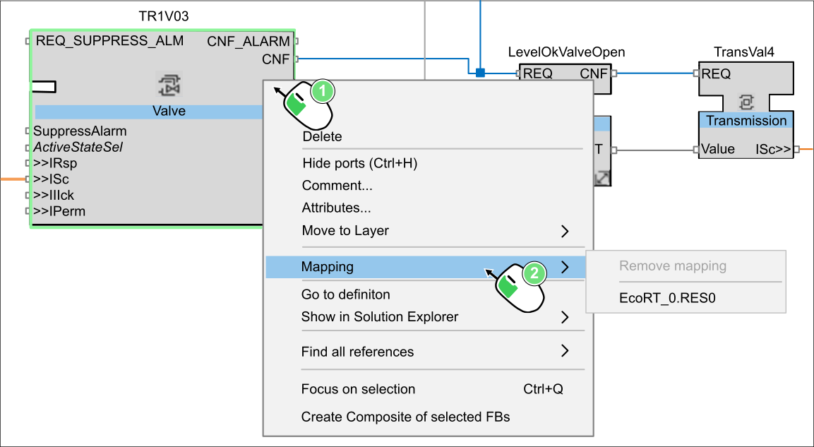
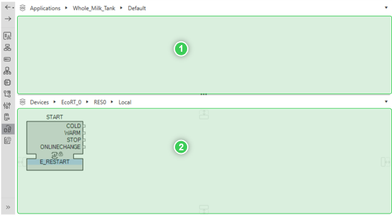
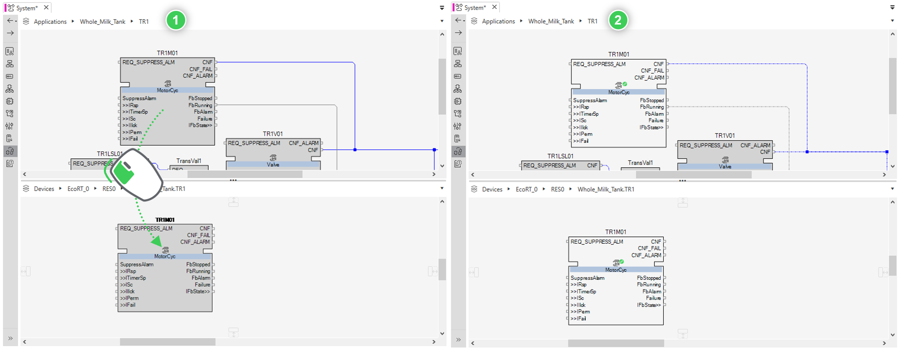
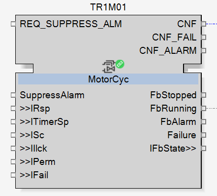
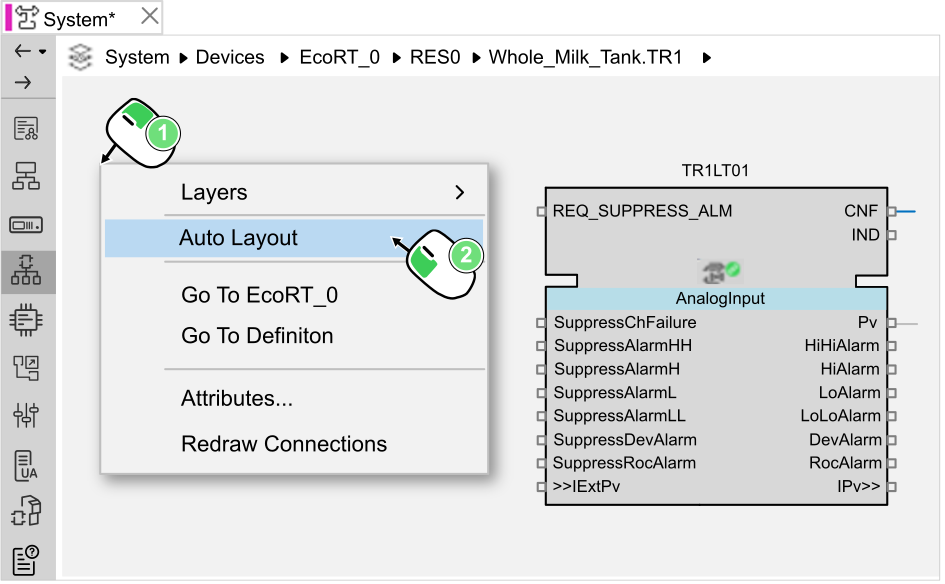
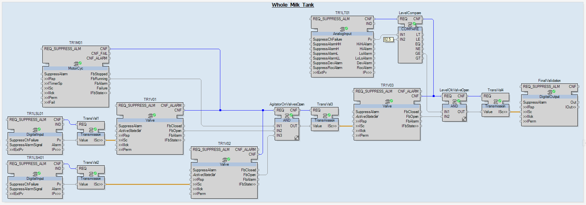

Mapping
The logical device has been set, the full application need to be mapped onto it.
Every function block added to the application will be mapped onto the resource, of a logical device.

|
NOTE:
The mapping concept is the base of the distributed controlling and hardware independence, as explained in the section What Is EcoStruxure Automation Expert?. |
There are two methods to map function blocks onto a logical device.
-
Method 1
-
In the application layer TR1, select a function block needed and select Mapping.


All the resources of the logical device available are proposed. -
Select the logical device which the function block is mapped onto, here EcoRT_0.RES0.
-
-
Method 2
-
Select the Function Blocks Mapping editor in the System Editor.
The resource layer is automatically divided in two parts. 
1 | Top part: Displays all the different applications that have been developed in EcoStruxure Automation Expert Buildtime.
2 | Bottom part: Displays the function blocks already assigned to this resource.
NOTE: Both sections have the same kind of breadcrumb as seen in Applications and layers editor for an easy navigation.
-
Drag and drop the function blocks from the top part into the bottom part to assign them to the resource.

-
| In Getting Started project, the only logical device used is EcoRT_0: Map all the function blocks of the Whole_Milk_Tank application using one of these two methods. |
Once a function block is mapped, its symbol (in the middle) changes.
|
 |
| In the resource layer, it might happen that the original organization of the function blocks get changed during the mapping process and become unreadable. |
To correct that, select the Function Blocks Network editor and navigate to the layer of the resource containing the mapped function blocks. Then click anywhere in the layer and select Auto Layout.

This automatically layout the function blocks like in their application layer.
